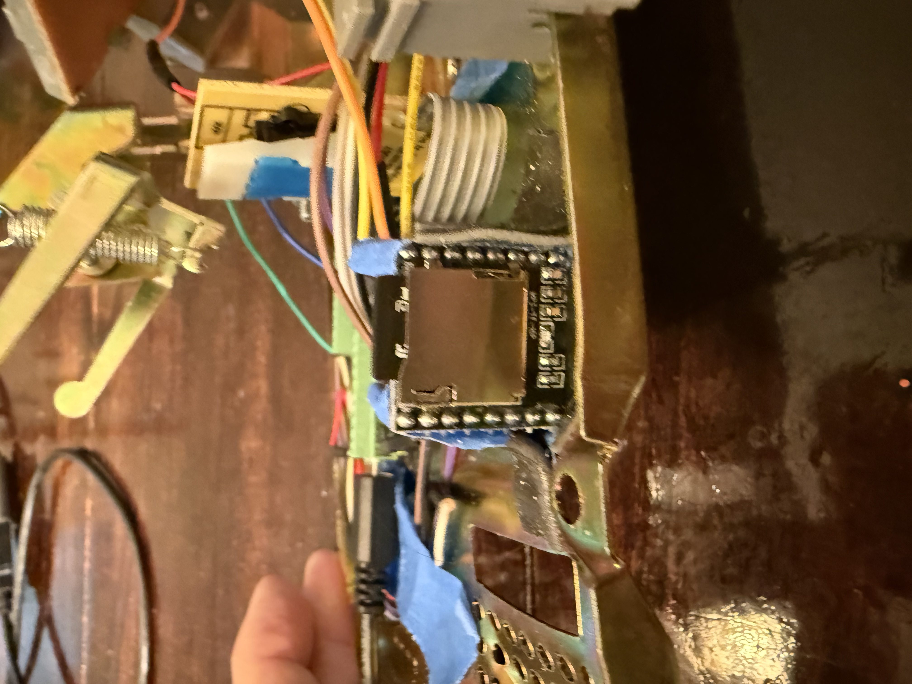

With the keypad working reliably, the next challenge was audio. The whole point of this phone is that you hear things: a dial tone, touch tones, ringing, and then a poem. I needed something that could play MP3s through the phone's earpiece without taxing the Pico's limited resources.
Why the DFPlayer Mini
I chose the DFPlayer Mini for a few reasons:
- Four wires. VCC, GND, TX, RX. That's the entire connection to the Pico.
- Built-in amp. It drives an 8-ohm speaker directly, which is exactly what a phone earpiece is.
- Built-in SD card slot. No separate breakout board needed.
- Zero CPU load. The DFPlayer handles all the MP3 decoding. The Pico stays free for keypad scanning and hook switch detection.
The alternative was an I2S DAC with a separate SD reader, external amp, and streaming WAV files from the Pico. That's 7+ wires, no MP3 support, and constant CPU load. For $3, the DFPlayer does everything.
The Wiring
The DFPlayer talks to the Pico over UART at 9600 baud. The wiring is straightforward, with one critical detail:
Pico DFPlayer Mini
==== =============
GP20 (UART1 TX) ---[1K Ω]------> RX
GP21 (UART1 RX) <--------------- TX
VBUS (5V) ----------------------> VCC
GND -----------------------------> GND
SPK1 ----> Phone earpiece (+)
SPK2 ----> Phone earpiece (-)That 1K resistor on the TX line is important. The Pico runs at 3.3V logic but the DFPlayer expects 5V. The resistor protects both sides. Don't skip it.
The 5V Lesson
My first test: nothing. No LED on the DFPlayer, no UART response, complete silence. I had it wired to the Pico's 3V3 pin.
The DFPlayer needs 5V. Period. On the Pico, that's the VBUS pin, the raw USB voltage. Not the 3V3 regulated output. Once I moved the power wire to VBUS, the DFPlayer's LED lit up and everything came alive.
If you're powering the DFPlayer externally (from a separate supply), that works too, but make sure you connect the grounds together. The Pico and DFPlayer must share a common ground or UART communication won't work.
Finding the DFPlayer with UART Probe
Even with the right power, I wasn't confident my TX/RX wires were on the right pins. So I wrote uart_probe.py, a script that tries multiple valid UART1 pin combinations and sends a raw status query to see if anything responds:
def try_uart(uart_id, tx_pin, rx_pin, label):
uart = UART(uart_id, baudrate=9600, tx=Pin(tx_pin), rx=Pin(rx_pin))
utime.sleep_ms(200)
uart.read() # flush stale data
# Send "get status" command (DFPlayer protocol)
cmd = bytearray([0x7E, 0xFF, 0x06, 0x42, 0x00,
0x00, 0x00, 0xFE, 0xB9, 0xEF])
uart.write(cmd)
utime.sleep_ms(500)
resp = uart.read()
if resp:
print("RESPONSE: {}".format(resp.hex()))
return True
return FalseOn the first successful run after fixing the power issue:
[1/3] GP20 TX -> DFPlayer RX, GP21 RX <- DFPlayer TX (UART1)
Testing normal (UART1, TX=GP20, RX=GP21)...
RESPONSE: 7eff06420002000000ef
>> FOUND on GP20/GP21 (correct!)First audio test: dial tone through the phone earpiece. The built-in amp drove the earpiece perfectly at volume 20 (out of 30).
The is_playing() Disaster
Everything seemed great until I deployed the full Poetry Phone state machine. You'd dial a number, hear ringing, the poem would start playing... and then nothing. The phone never returned to the dial tone when the poem finished.
The original code used df.is_playing() to detect when playback ended. According to the DFPlayer datasheet, this function returns the file number while playing, 0 when stopped, and -1 on error. Simple enough.
I added a monitoring script to log is_playing() every 500ms during a 30-second playback:
Time(s) is_playing()
------- ------------
0.5 -1
1.0 -1
1.5 -1
...
29.5 -1
30.0 -1Every single read returned -1. Not during playback, not after it stopped. Always -1. The UART query for playback status simply doesn't work on this particular DFPlayer clone.
This is a known issue with cheaper DFPlayer modules. The chip inside isn't always a genuine YX5200. Clones use different chipsets that implement most of the protocol but skip certain query commands. Unfortunately, is_playing() is one of them.
First Fix Attempt: Check for 0
Changed the check from playing > 0 to playing == 0, thinking maybe the error was in my comparison. No help. 0 never appeared either.
Second Fix Attempt: Treat -1 as "stopped"
Changed it to playing <= 0. Now poems never played at all. The function returned -1 immediately after calling play(), before the DFPlayer even started decoding.
Third Fix Attempt: Grace Period
Added a 2-second delay before checking:
if utime.ticks_diff(utime.ticks_ms(), play_start) > 2000:
if df.is_playing() <= 0:
# Playback must be donePoems played for exactly 2 seconds, then got cut off. The -1 never changes.
At this point I gave up on is_playing() entirely.
The BUSY Pin Solution
The DFPlayer has a hardware pin called BUSY that does exactly what is_playing() was supposed to do, and it actually works. It's a simple digital signal: LOW while audio is playing, HIGH when idle.
No UART queries, no parsing responses, no clone compatibility issues. Just read a pin.
I connected it to GP17 on the Pico:
DFPlayer BUSY ----> Pico GP17 (input, pull-up)Then wrote a quick test to verify:
busy = Pin(17, Pin.IN, Pin.PULL_UP)
df.play(1, 1) # play dial tone
for i in range(30):
utime.sleep_ms(500)
val = busy.value()
status = "IDLE" if val == 1 else "PLAYING"
print("{:5.1f} {} {}".format((i+1)*0.5, val, status))Time(s) BUSY Status
------- ---- ------
0.5 0 PLAYING
1.0 0 PLAYING
...
14.0 0 PLAYING
14.5 1 IDLE ← track finished
15.0 1 IDLEClean transitions, every time. One gotcha: the BUSY pin briefly reads HIGH right after you call play(), before the DFPlayer starts decoding. A 2-second grace period handles this. Don't check the pin until the audio has had time to start.
The final STATE_PLAYING logic:
# Check BUSY pin: HIGH = idle (playback finished)
# Skip first 2s to let DFPlayer start
if utime.ticks_diff(utime.ticks_ms(), play_start) > 2000:
if busy_pin.value() == 1:
print("[playback finished]")
play_sfx(SFX_HANGUP) # click sound
utime.sleep_ms(500)
stop_audio()
start_dialtone() # back to dial tone
state = STATE_OFF_HOOKThe Hook Switch
The last piece of hardware was the hook switch, the mechanism that detects whether the handset is on the cradle or lifted. This particular phone has a normally-open switch, meaning:
- Handset down (on-hook): switch open, pin reads HIGH (pulled up)
- Handset lifted (off-hook): switch closes to ground, pin reads LOW
I wired it to GP22 with the Pico's internal pull-up:
GP22 ----+---- Hook Switch ---- GND
|
(internal pull-up)A simple hardware test confirmed the behavior. Rock solid transitions, no bounce issues like the keypad. The hook switch is a much heavier mechanism than the thin membrane keypad contacts.
The phone checks for hangup in every state. Pick up the handset, you get a dial tone. Put it down at any point, mid-dial, mid-ring, mid-poem, and everything stops and resets.
The Invisible Bug: UART1 Steals Your Keypad Pins
This was the hardest bug in the entire project. After wiring up the DFPlayer, the keypad started failing intermittently. Sometimes all keys worked. Sometimes row 0 (1-2-3) or column 1 (2-5-8-0) would go dead. Restarting the script sometimes fixed it. Rebooting the Pico sometimes didn't.
I spent hours checking wires, adding pull-ups, swapping GPIO pins. Nothing made sense. The keypad had been rock solid before I added the DFPlayer.
The problem wasn't the wiring. It was one line of code:
self.uart = machine.UART(1, 9600)On the RP2040, UART(1, 9600) without explicit tx/rx parameters silently claims GP4 and GP5, the default UART1 pins. Even if you immediately call .init() with different pins (GP20/GP21), the damage is done. GP4 and GP5 have been briefly reconfigured as UART pins, and they don't always cleanly return to GPIO mode.
GP4 is keypad row 0 (keys 1, 2, 3). GP5 is keypad column 1 (keys 2, 5, 8, 0). The DFPlayer init was silently breaking half the keypad on every boot.
The Fix
Pass the pins directly in the constructor so UART1 never touches GP4/GP5:
# Before (broken): claims GP4/GP5 briefly
self.uart = machine.UART(1, 9600)
self.uart.init(9600, bits=8, parity=None, stop=1, tx=20, rx=21)
# After (fixed): never touches GP4/GP5
self.uart = machine.UART(1, 9600, bits=8, parity=None, stop=1, tx=20, rx=21)One line. Hours of debugging. The lesson: on RP2040, always pass explicit tx and rx pins when creating a UART. The default pins are not just defaults. They get physically configured even before you call .init().
Putting It All Together
The complete system uses a five-state machine:
IDLE → OFF_HOOK → DIALING → CONNECTING → PLAYING
↓
OFF_HOOK (poem done)Every state checks for hangup. The keypad scanning code from Part 1 carries through unchanged. It already handles the noisy bottom row.
Special codes (dialing 0 for operator, 411 for directory assistance, 305 for an O, Miami greeting) route through the same PLAYING state as poems, so they get the same BUSY pin end-of-track detection.
The DFPlayer handles three folders on the SD card:
/01/ → Sound effects (dial tone, ringback, DTMF tones, etc.)
/02/ → Poems mapped to phone numbers
/03/ → Random poems for unknown numbersDial a number that's in the phonebook? You get that specific poem. Dial anything else? A random poem from folder 03. Every call connects to something.
What I Learned
- The BUSY pin is the only reliable way to detect playback state on DFPlayer clones. Don't trust
is_playing(). It may work on genuine YX5200 chips, but clones return garbage. - The DFPlayer needs 5V. Not 3.3V, not "it might work at 3.3V." Use VBUS on the Pico or an external 5V supply with common ground.
- Build diagnostic tools early. The UART probe and BUSY pin test scripts saved hours of guesswork. When something doesn't work, isolate the problem with a minimal test before changing the main code.
- Hardware signals beat software queries. A physical pin that goes LOW when playing is simpler, faster, and more reliable than sending a UART command and parsing the response. When hardware gives you a shortcut, take it.
The phone is fully functional now. Pick up, hear the dial tone, punch in a number, hear it ring, listen to a poem, hang up. Everything a real phone call should feel like, minus the cell tower.
The phone works. Now it needs to survive kids at an outdoor festival. Part 3.
The Journey
- Part 1: Cracking the keypad matrix
- Part 2: Wiring the DFPlayer Mini
- Part 3: Kid-proofing and Easter eggs
- Part 4: Making it a banana